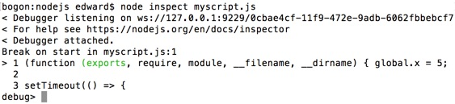
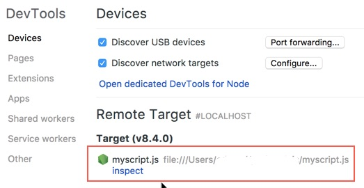
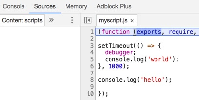
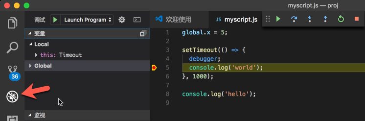

1 Inspector
Node.js版本更新快，调试的方法也在不断的改进，本文主要记录几个较新的调试手段。
随着Node.js的发展，虽然说更多的调试工具和库将会出现，不过本文列举的方法应该会继续兼容支持、变化不大。
想了解更多的朋友可以访问 Inspector 。
2 打印
对于小程序或者其他调试工具不支持的情况下，在关键的地方添加打印是比较基本的方法。
一般使用 console.log 方法来输出调试信息，使用方式类似于 printf ，熟悉C语言的应该不会感到陌生。
当然你也可以自行设计一个接口来输出调试信息，允许控制开启关闭、调试的级别等等。
3 node-inspect
喜欢命令行的可以使用 node-inspect 来调试，体验类似于 GDB 。Node附带的node-inspect版本调用方法如下：
运行效果如下图： 
最新版本node-inspect通过npm安装后，调用方法如下：
更具体的操作可以参考 这里 ，能够满足日常使用。
4 Chrome开发者工具
有前端开发经验的童鞋肯定知道调试页面问题，通过浏览器的开发者工具进行debug事半功倍。
Node.js使用的也是javascript语言，那么可以通过浏览器的开发者工具进行调试吗？答案是肯定的。
新版本(55+)的Chrome浏览器支持调试Node.js，方法有两种：
- 在Chrome浏览器中访问 chrome://inspect 地址，然后选择你的Node.js程序
- 安装Chrome的扩展程序 NIM (可能需要翻墙 Orz)
记得通过–inspect或者–inspect-brk选项启动你的Node.js程序!
其中–inspect-brk选项相当于在第一行设置断点，比较方便。

上图是方法一的效果图。
然后就是熟悉的调试界面，尽情发挥你丰富的前端调试经验吧！设置断点、单步跳入、单步跳出、观察…

5 VS Code
VS Code 也就是Visual Studio Code，是一个比较轻量级的跨平台代码编辑器，内置了JavaScript、TypeScript和Node.js支持。
调试也比较方便，熟悉微软那一套开发工具的应该驾轻就熟了。打开调试面板，界面如下：

调试相关的一些配置在launch.json文件里面，可以根据需要进行修改，比如说修改cwd变量1为${fileDirname}。
6 小结
上面的调试方法并没有列全，大家可以到 这里 继续了解，找到适合自己的调试工具。
个人比较推荐打印+Chrome开发者工具，简单实用、与前端调试保持一致，而且换台电脑也能快速调试。